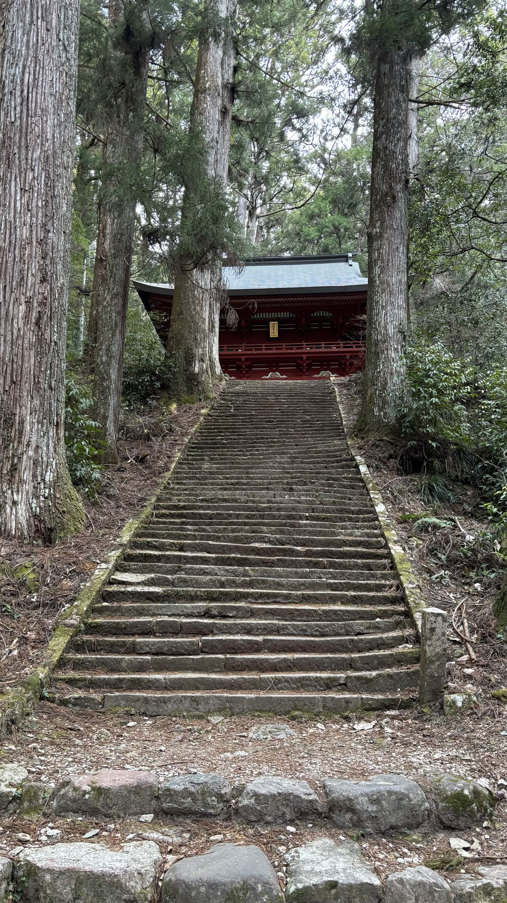
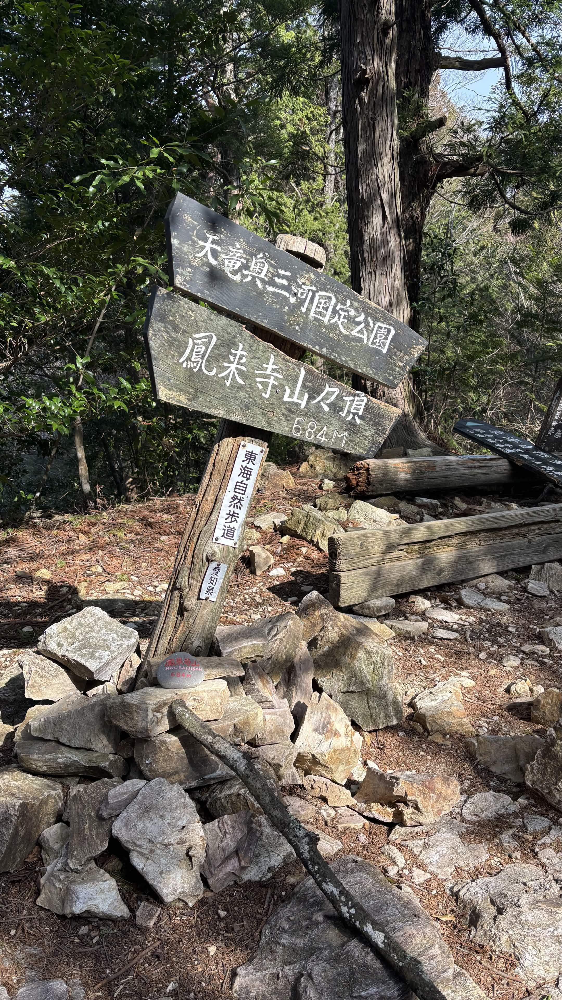
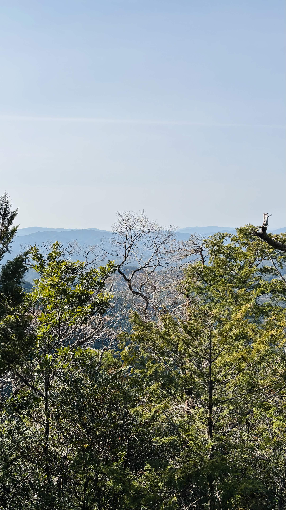

| 日程 | 2026年3月22日（登頂） |
|---|---|
| メンバー | ソロ（なし） |
| 難易度（俺流10段階） | 技術力 1 / 体力度 3 |
| アクセスコース目安 |
・鳳来寺バス停 → 鳳来寺：約1時間 ・鳳来寺 → 鳳来寺山：約45分 ・鳳来寺山 → 瑠璃山：約8分 ・瑠璃山 → 天狗岩：約15分 ・天狗岩 → 鷹打場：約15分（周回コース） |

愛知県に住みながら今まで訪れる機会がなかった名峰・鳳来寺山へ、初めて行ってきました。

地元愛知の名山でありながら今まで未踏だったことを後悔するほど、変化と絶景に富んだ最高の山行になりました。今回は周回コースでしたが、いずれはさらに足を延ばして宇連山までの縦走ルートにも挑戦してみたいです！
← HOMEへ戻る